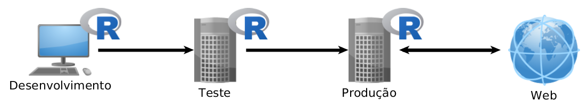
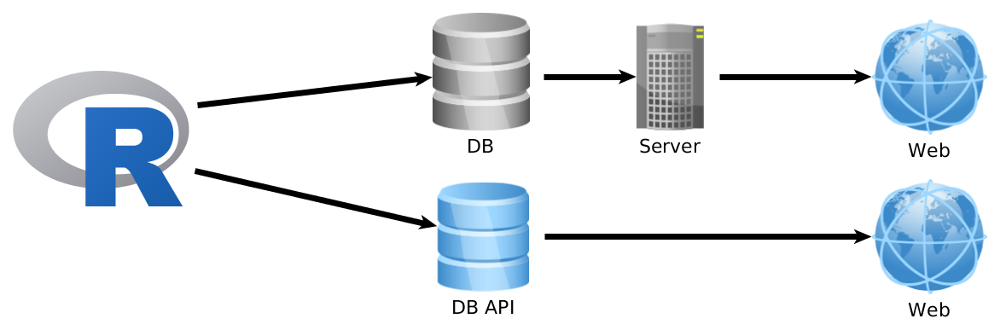

Utilizando o R em
Desenvolvimento e Produção

Daniel Ikenaga (CTO & Data Science do Jupter)
daniel@jupter.co
Ambiente de trabalho
- Desenvolvimento web
- Equipes diversificadas
Arquitetura
- Desenvolvimento
- Homologação (servidor teste e ferramentas de teste)
- Produção (servidor)

Tempo
- Desenvolvimento - R vs Implementações diferentes?
- Execução - Velocidade de resposta?
- Validade - Utilidade do dado?
- Consumo - Necessita tempo real?
Ferramentas
- Frameworks: Node (JavaScript), Rails (Ruby), Django (Python), Laravel (PHP)
- MVC - Model View Controller
- API Rest
- nginx
- Git (Git flow)
Método: Shiny
- Implementação de Dashboards em Shiny em O Boticário - J Farinela & L Marchioro
- Voronoys: Um aplicativo shiny para decifrar as eleições no Brasil - DRM Azevedo
- Introdução ao Shiny - WN de Amorim
- Gerando relatórios preformatados com Shiny, Bookdown e Glue - J de Jesus Filho
Método Cron
Cron + RScript
.* * * * * Rscript "/home/ubuntu/analysis.R"
Método shell
Language -> shell + RScript
<?php
$A = 4;
$B = 1;
exec("Rscript soma.R $A $B");
?>
Plumber
soma.R
#* @get/soma
soma <- function(a,b){
as.numeric(a) + as.numeric(b)
}
server.R
library(plumber)
r <- plumb("soma.R")
r$run(port=80)
http://meusite.com/soma?a=10&b=15
Método DB
R + Database (SQL, NoSQL)
